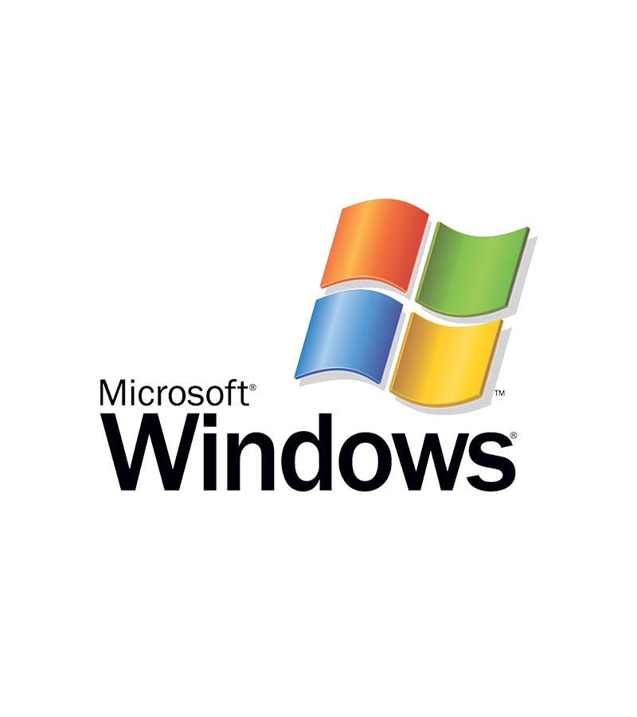

Windows

What is Windows?
Windows is a proprietary operating system developed by Microsoft. It was first released in 1985 by Bill Gates and Paul Allen.
As a proprietary system, Windows’ source code is not publicly available for modification or distribution.
This has led to a series of different versions, or “editions”, of the Windows operating system, including popular versions like Windows XP, Windows 7, Windows 8, and Windows 10.
Windows is used in a variety of different types of systems, from personal computers and servers to embedded systems in devices such as ATMs and kiosks.